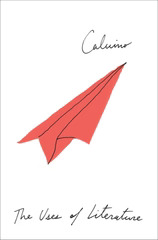

The Uses of Literature
Una pietra sopra: discorsi di letteratura e società
This is the first extended non-fiction I've read by Calvino, and it's incredibly distinct from his fiction -- even his more realistic works. There's a sort of focus present in these essays that's missing from the fiction I've read so far. Though he may range broadly across history and related (or less-related) works when looking at a particular piece, there's not really the stream-of-consciousness-adjacent run-on sentences or endless enumerations that are so characteristic of his fiction style. It's a major change of pace, though I can see a little of it echoing in If on a winter's night (as the Reader got drawn into the university and publishing worlds, which started to give Calvino a bit of room to explore these sorts of topics and influences)
"Why read the classics?" is the standout essay here, for me. It's clear, and direct, and gives a range of reasons to do the work that would make the rest of the collection more legible.
I found the essays hit or miss if I didn't have the relevant context. Fourier's work sounds fascinating, for instance. "Stendhal's Knowledge of the 'Milky Way'" was interesting more for the form of the essay than for the content, on the other hand; the first half in particular felt like a formal writing exercise in the guise of criticism -- in this case, look at a work and tie everything back to mathematics as closely as possible.
Overall here, Calvino shows his mastery of European literature in a way that I don't often see writers doing today (they've mostly left it to the critics, for better or worse -- though there are, of course, exceptions). Some of the more in-depth essays on works I hadn't read were rough going, but the end result was worth it.